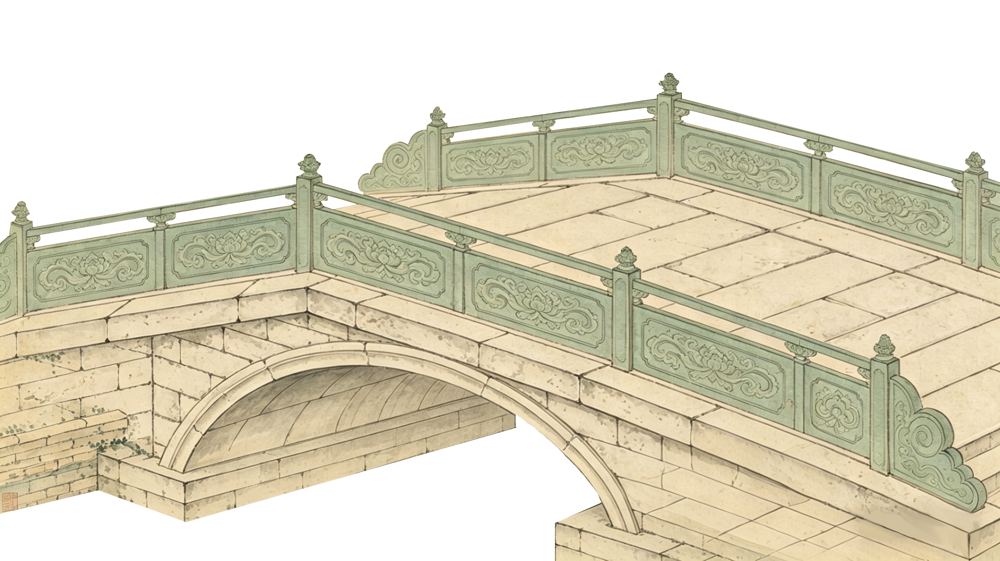
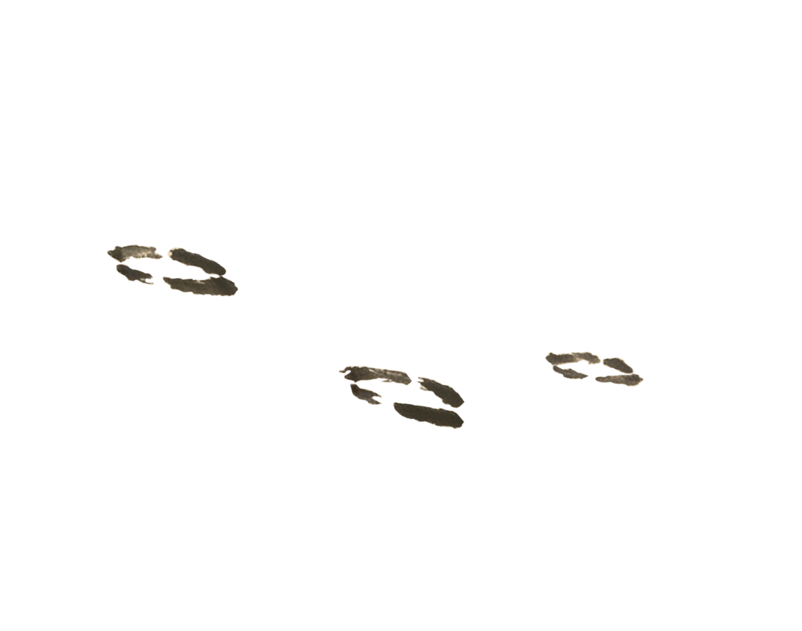
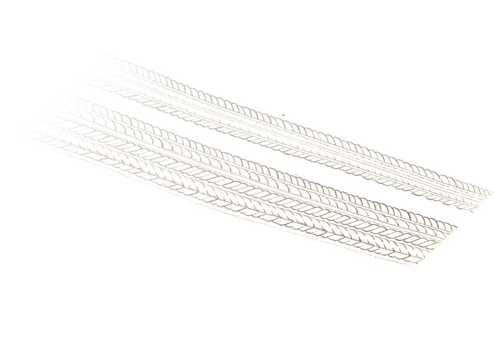
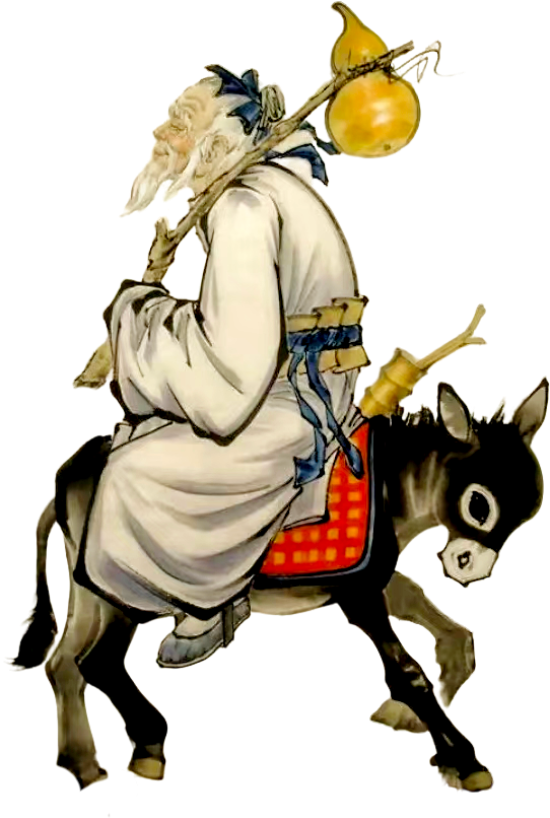
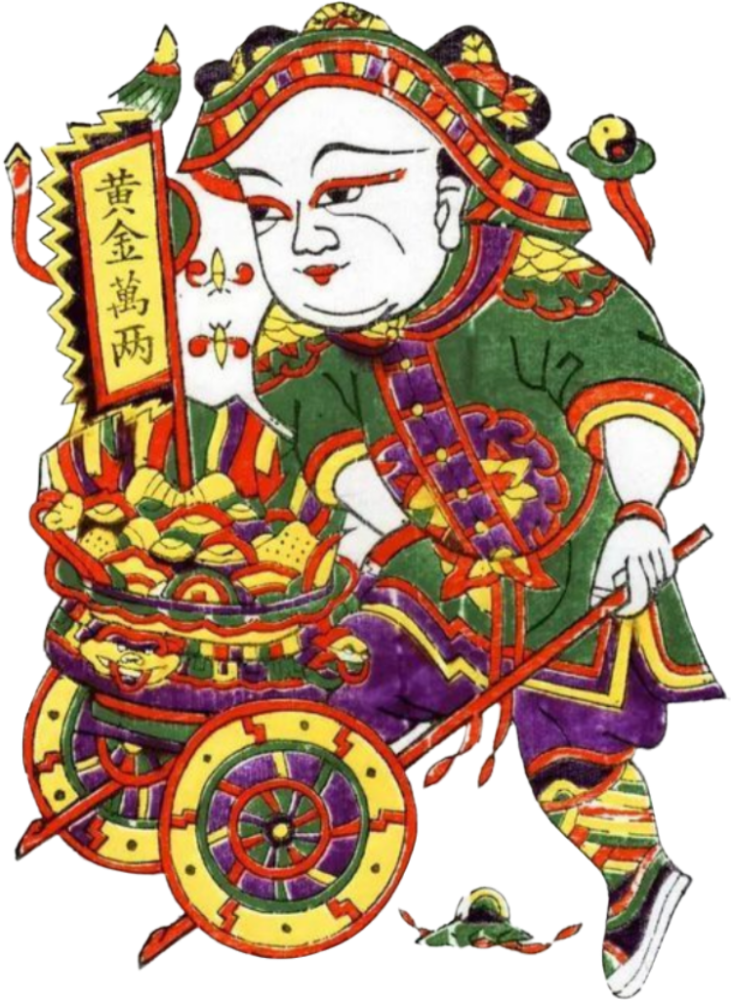

仙 迹
古代桥梁之上，常留存有驴蹄印、车沟、手掌印等神秘痕迹，此类印迹并非单纯的自然磨损，而是古人将神仙传说具象化地镌刻于桥身的文化表征。民间信仰体系中，此类痕迹被视作仙人途经此桥的实证，其留存印记的核心功能在于镇桥护民，赋予桥梁以神性庇佑的文化内涵。民众途经桥梁时，观此仙迹即生桥梁受神灵护持之信念，由此获得心理慰藉与安全感，本质上是古人“以神护桥”朴素信仰的具象化呈现。

鲁班托桥
由于神仙所带重物过重，桥梁几乎要倾塌，情急之下鲁班用手托住桥身。桥底因此留下了鲁班的手掌印，成为神仙验桥、神人护桥的永久见证。

果老留踪
相传张果老骑着毛驴从桥上走过，驴蹄踏在石桥上，留下了深深的蹄印。

柴王压痕
柴王推着载有重物的小车经过桥面，车轮在桥上压出了深深的车沟。